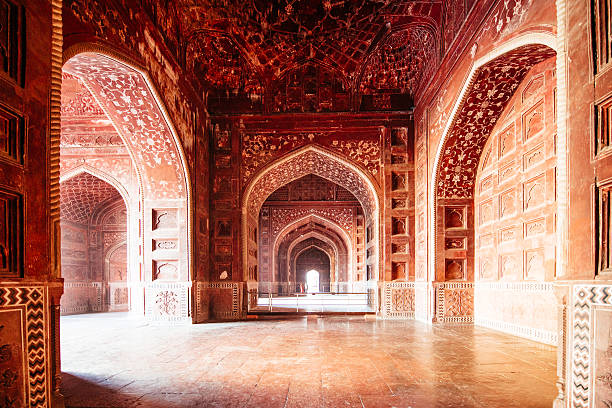
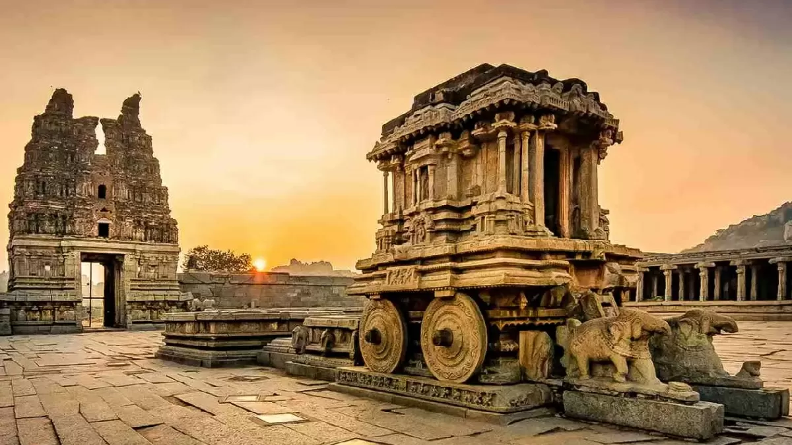
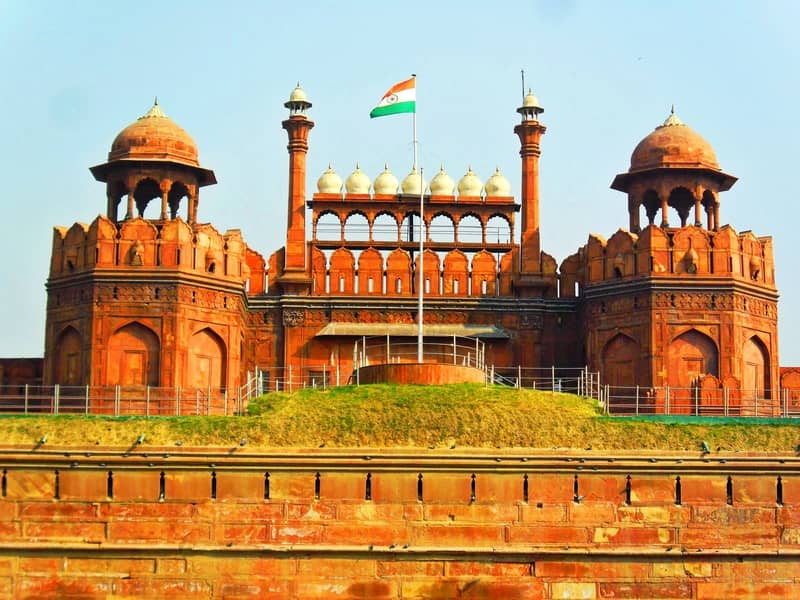

Qutb-Minar
Qutub Minar is the second tallest and
ever attractive historical monument of India located in Delhi at Aurobindo Marg, Mehrauli.
It is built in unique architectural style using red sandstones and marble.
It is considered that Mughals built this victory tower
to celebrate their victories over the Rajputs.
Victoria Memorial
One of the landmarks of Kolkata,
Victoria Memorial is a grand British-era structure built entirely of white marble.
Constructed in the Indo-Saracenic revivalist style,
using a mix of British and Mughal elements, the memorial draws
influences from Islamic, Venetian, Egyptian and Deccani styles.
Taj Mahal
The Taj Mahal is an ivory-white marble mausoleum on the
south bank of the Yamuna river in the Indian city of Agra.
It was commissioned in 1632 by the Mughal emperor, Shah Jahan (reigned from 1628 to 1658),
to house the tomb of his favourite wife, Mumtaz Mahal.


Gateway of India
It served to allow entry and access to India. The Gateway of India is located
on the waterfront at Apollo Bunder area at the end of Chhatrapati Shivaji Marg in South Mumbai
and overlooks the Arabian Sea.
The monument has also been referred to as the Taj Mahal of Mumbai,
and is the city's top tourist attraction..
Virupaksha Temple
Virupaksha Temple is the 7th century Shiva temple in Hampi,
Central Karnataka. Hampi is a UNESCO World Heritage Site. Lord Virupaksha,
also referred to as Pampapathi is the main deity in Virupaksha Temple.
Virupaksha Temple complex also houses shrines of Bhuvaneshwari and Vidyaranya.

Humayun's Tomb
The tomb of Humayun, second Mughal Emperor of India,
was built by his widow, Biga Begum (Hajji Begum), in 1569-70,
14 years after his death, at a cost of 1.5 million rupees.
The architect was Mirak Mirza Ghiyath. It was later used for
the burial of various members of the ruling family and contains some 150 graves.
Hawa Mahal
The Hawa Mahal is a five-storey building,
and it is the tallest building in the world that has been built without a foundation.
It has a curved architecture that leans at an 87 degree angle,
and a pyramidal shape which has helped
it stay erect for centuries.
The Hawa Mahal is dedicated to Lord Krishna.
Red Fort
The Red Fort Complex was built as the palace fort of Shahjahanabad-
the new capital of the fifth Mughal Emperor of India, Shah Jahan. Named for
its massive enclosing walls of red sandstone, it is adjacent to an older fort, the Salimgarh,
built by Islam Shah Suri in 1546, with which it forms the Red Fort Complex.
